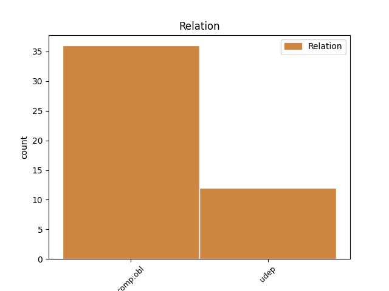
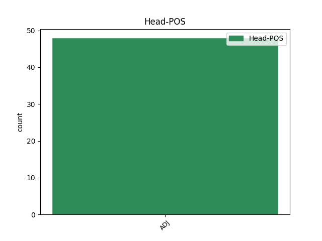
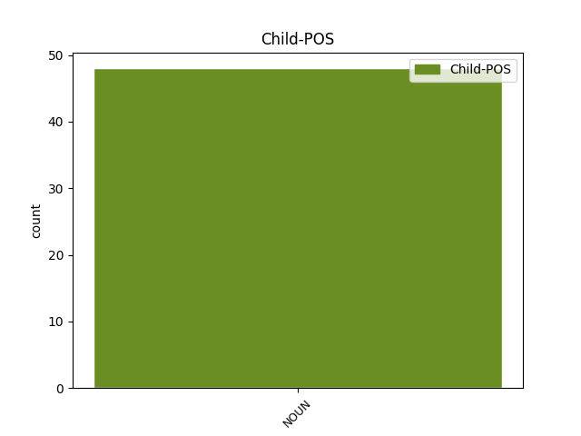

Distribution of features within this leaf



Agreement Rules sorted by frequency.
- When the dependent token is the oblique complements(comp:obl) of the head token, and the head token is ADJ and the dependent token is NOUN.
1 jus _ _ _ _ 0 _ _ _
2 auk _ _ _ _ 0 _ _ _
3 galeikondans _ _ _ _ 0 _ _ _
4 waurþuþ _ _ _ _ 0 _ _ _
5 broþrjus _ _ _ _ 0 _ _ _
6 aikklesjom _ _ _ _ 0 _ _ _
7 gudis _ _ _ _ 0 _ _ _
8 þaim _ _ _ _ 0 _ _ _
9 wisandeim _ _ _ _ 0 _ _ _
10 in _ _ _ _ 0 _ _ _
11 Iudaia _ _ _ _ 0 _ _ _
12 in _ _ _ _ 0 _ _ _
13 Xristau _ _ _ _ 0 _ _ _
14 Iesu _ _ _ _ 0 _ _ _
15 unte _ _ _ _ 0 _ _ _
16 þata _ _ _ _ 0 _ _ _
17 samo _ _ _ _ 0 _ _ _
18 wunnuþ _ _ _ _ 0 _ _ _
19 jah _ _ _ _ 0 _ _ _
20 jus _ _ _ _ 0 _ _ _
21 fram _ _ _ _ 0 _ _ _
22 izwaraim _ _ _ _ 0 _ _ _
23 inkunjam _ _ _ _ 0 _ _ _
24 swaswe _ _ _ _ 0 _ _ _
25 jah _ _ _ _ 0 _ _ _
26 weis _ _ _ _ 0 _ _ _
27 fram _ _ _ _ 0 _ _ _
28 Iudaium _ _ _ _ 0 _ _ _
29 þaiei _ _ _ _ 0 _ _ _
30 jah _ _ _ _ 0 _ _ _
31 fraujin _ _ _ _ 0 _ _ _
32 usqemun _ _ _ _ 0 _ _ _
33 Iesua _ _ _ _ 0 _ _ _
34 jah _ _ _ _ 0 _ _ _
35 swesaim _ _ _ _ 0 _ _ _
36 praufetum _ _ _ _ 0 _ _ _
37 jah _ _ _ _ 0 _ _ _
38 uns _ _ _ _ 0 _ _ _
39 frawrekun _ _ _ _ 0 _ _ _
40 jah _ _ _ _ 0 _ _ _
41 guda _ _ _ _ 0 _ _ _
42 ni _ _ _ _ 0 _ _ _
43 galeikandans _ _ _ _ 0 _ _ _
44 jah _ _ _ _ 0 _ _ _
45 allaim _ _ _ _ 0 _ _ _
46 mannam manna NOUN Nb Case=Dat|Gender=Masc|Number=Plur 47 comp:obl _ LId=2|ref=1THESS_2.15
47 andaneiþans andaneiþa ADJ A- Case=Nom|Degree=Pos|Gender=Masc|Number=Plur|Strength=Weak 0 _ _ _
48 sind _ _ _ _ 0 _ _ _
49 warjandans _ _ _ _ 0 _ _ _
50 uns _ _ _ _ 0 _ _ _
51 du _ _ _ _ 0 _ _ _
52 þiudom _ _ _ _ 0 _ _ _
53 rodjan _ _ _ _ 0 _ _ _
54 ei _ _ _ _ 0 _ _ _
55 ganisaina _ _ _ _ 0 _ _ _
56 akei _ _ _ _ 0 _ _ _
57 du _ _ _ _ 0 _ _ _
58 usfulljan _ _ _ _ 0 _ _ _
59 seinos _ _ _ _ 0 _ _ _
60 frawaurhtins _ _ _ _ 0 _ _ _
61 sinteino _ _ _ _ 0 _ _ _
1 swaswe _ _ _ _ 0 _ _ _
2 andwairþs andwairþs ADJ A- Case=Nom|Degree=Pos|Gender=Masc|Number=Sing|Strength=Strong 0 _ _ _
3 anþaramma _ _ _ _ 0 _ _ _
4 sinþa sinþs* NOUN Nb Case=Dat|Gender=Masc|Number=Sing 2 udep _ ref=2COR_13.2
5 jah _ _ _ _ 0 _ _ _
6 aljaþro _ _ _ _ 0 _ _ _
7 nu _ _ _ _ 0 _ _ _
8 melja _ _ _ _ 0 _ _ _
9 þaim _ _ _ _ 0 _ _ _
10 faura _ _ _ _ 0 _ _ _
11 frawaurkjandam _ _ _ _ 0 _ _ _
12 jah _ _ _ _ 0 _ _ _
13 anþaraim _ _ _ _ 0 _ _ _
14 allaim _ _ _ _ 0 _ _ _
15 þatei _ _ _ _ 0 _ _ _
16 jabai _ _ _ _ 0 _ _ _
17 qima _ _ _ _ 0 _ _ _
18 aftra _ _ _ _ 0 _ _ _
19 ni _ _ _ _ 0 _ _ _
20 freidja _ _ _ _ 0 _ _ _
Disagree Examples:
1 jah _ _ _ _ 0 _ _ _
2 managizo manags ADJ A- Case=Acc|Degree=Cmp|Gender=Neut|Number=Sing|Strength=Weak 0 _ _ _
3 praufetau praufetes NOUN Nb Case=Dat|Gender=Masc|Number=Sing 2 comp:obl _ ref=MATT_11.9
1 jah _ _ _ _ 0 _ _ _
2 þata _ _ _ _ 0 _ _ _
3 du _ _ _ _ 0 _ _ _
4 frijon _ _ _ _ 0 _ _ _
5 ina _ _ _ _ 0 _ _ _
6 us _ _ _ _ 0 _ _ _
7 allamma _ _ _ _ 0 _ _ _
8 hairtin _ _ _ _ 0 _ _ _
9 jah _ _ _ _ 0 _ _ _
10 us _ _ _ _ 0 _ _ _
11 allamma _ _ _ _ 0 _ _ _
12 fraþja _ _ _ _ 0 _ _ _
13 jah _ _ _ _ 0 _ _ _
14 us _ _ _ _ 0 _ _ _
15 allai _ _ _ _ 0 _ _ _
16 saiwalai _ _ _ _ 0 _ _ _
17 jah _ _ _ _ 0 _ _ _
18 us _ _ _ _ 0 _ _ _
19 allai _ _ _ _ 0 _ _ _
20 mahtai _ _ _ _ 0 _ _ _
21 jah _ _ _ _ 0 _ _ _
22 þata _ _ _ _ 0 _ _ _
23 du _ _ _ _ 0 _ _ _
24 frijon _ _ _ _ 0 _ _ _
25 neƕundjan _ _ _ _ 0 _ _ _
26 swe _ _ _ _ 0 _ _ _
27 sik _ _ _ _ 0 _ _ _
28 silban _ _ _ _ 0 _ _ _
29 managizo manags ADJ A- Case=Nom|Degree=Cmp|Gender=Neut|Number=Sing|Strength=Weak 0 _ _ _
30 ist _ _ _ _ 0 _ _ _
31 allaim _ _ _ _ 0 _ _ _
32 þaim _ _ _ _ 0 _ _ _
33 alabrunstim alabrunsts NOUN Nb Case=Dat|Gender=Fem|Number=Plur 29 comp:obl _ ref=MARK_12.33
34 jah _ _ _ _ 0 _ _ _
35 saudim _ _ _ _ 0 _ _ _
1 jah _ _ _ _ 0 _ _ _
2 ni _ _ _ _ 0 _ _ _
3 was _ _ _ _ 0 _ _ _
4 im _ _ _ _ 0 _ _ _
5 barne _ _ _ _ 0 _ _ _
6 unte _ _ _ _ 0 _ _ _
7 was _ _ _ _ 0 _ _ _
8 Aileisabaiþ _ _ _ _ 0 _ _ _
9 stairo _ _ _ _ 0 _ _ _
10 jah _ _ _ _ 0 _ _ _
11 ba _ _ _ _ 0 _ _ _
12 framaldra framaldrs ADJ A- Case=Nom|Degree=Pos|Gender=Neut|Number=Plur|Strength=Strong 0 _ _ _
13 dage dags NOUN Nb Case=Gen|Gender=Masc|Number=Plur 12 comp:obl _ ref=LUKE_1.7
14 seinaize _ _ _ _ 0 _ _ _
15 wesun _ _ _ _ 0 _ _ _
1 distahida _ _ _ _ 0 _ _ _
2 mikilþuhtans mikilþuhts ADJ A- Case=Acc|Degree=Pos|Gender=Masc|Number=Plur 0 _ _ _
3 gahugdai gahugds NOUN Nb Case=Dat|Gender=Fem|Number=Sing 2 udep _ ref=LUKE_1.51
4 hairtins _ _ _ _ 0 _ _ _
5 seinis _ _ _ _ 0 _ _ _
1 soh _ _ _ _ 0 _ _ _
2 framaldra framaldrs ADJ A- Case=Nom|Degree=Pos|Gender=Fem|Number=Sing|Strength=Strong 0 _ _ _
3 dage dags NOUN Nb Case=Gen|Gender=Masc|Number=Plur 2 udep _ ref=LUKE_2.36
4 managaize _ _ _ _ 0 _ _ _
5 libandei _ _ _ _ 0 _ _ _
6 miþ _ _ _ _ 0 _ _ _
7 abin _ _ _ _ 0 _ _ _
8 jera _ _ _ _ 0 _ _ _
9 sibun _ _ _ _ 0 _ _ _
10 fram _ _ _ _ 0 _ _ _
11 magaþein _ _ _ _ 0 _ _ _
12 seinai _ _ _ _ 0 _ _ _